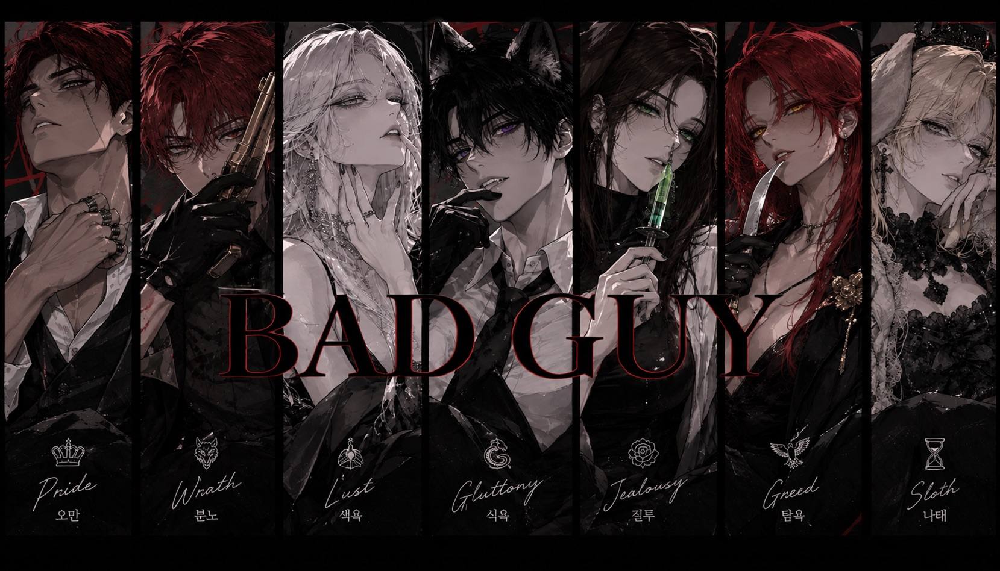

VII
01 / LORE
“욕망은 죄가 되었고,
죄는 이름을 얻었다.”
칠죄종. 일곱 개의 죄악을 코드네임으로 삼은 조직. 각자는 서로 다른 방식으로 욕망하고, 서로 다른 방식으로 살아남는다. 메디컬부터 정보상, 협상가, 해커까지—그들의 직무와 죄악은 하나의 이름 아래 묶여 있다.
02 / MEMBERS
THE SEVEN
클릭하여 각 인물의 기록을 확인하십시오.
03 / ARCHIVE
ORGANIZATION FILE7
죄악 / 코드네임 / 직무 / 상징 / 무기
 김캐마
김캐마 대부기
대부기 문향단
문향단 이정잭
이정잭 아랑
아랑 우현
우현 개
개01JEALOUSY김캐마 · MEDICAL
02WRATH대부기 · ENFORCER
03GREED문향단 · INFORMANT
04PRIDE이정잭 · BOSS
05LUST아랑 · NEGOTIATOR
06GLUTTONY우현 · CLEANER
07SLOTH개 · HACKER